Feliz cumpleaños Belén
Te quiero mucho
Capítulo uno

Toda historia tiene un comienzo, y esta es la nuestra.
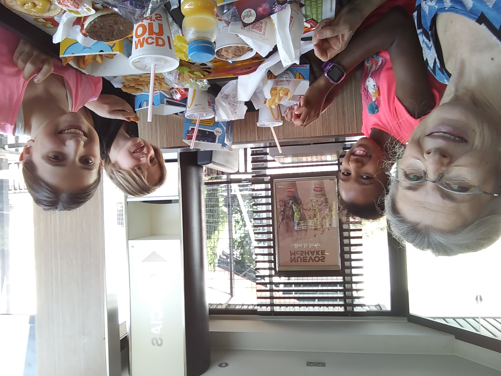
Desde el primer momento, sin saberlo, empezábamos a construir tantos recuerdos.
Pequeños momentos

Al final, son esos pequeños momentos los que terminan significándolo todo.

Hay recuerdos que vuelven a la mente con solo ver una fotografía.

Algunos de mis momentos favoritos son aquellos que nunca planeamos.

Qué curioso que momentos tan sencillos puedan acabar siendo tan importantes.
Más recuerdos

Si pudiera volver a vivir algunos días, seguramente elegiría muchos de estos.
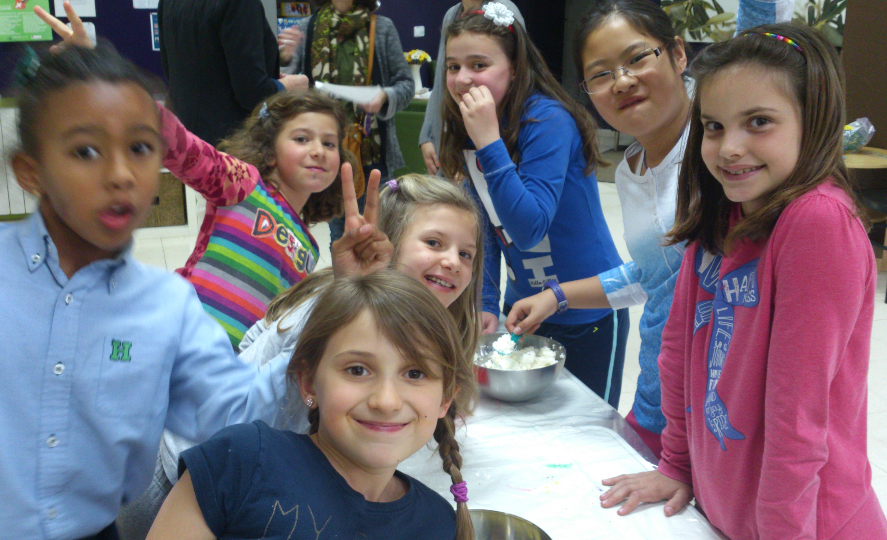
No siempre hace falta hacer algo extraordinario para pasar un día inolvidable.
Instantes
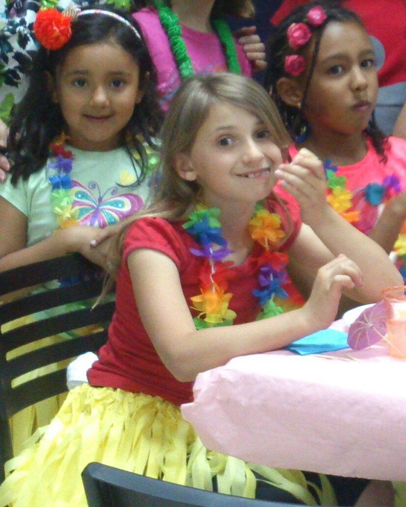
Me gusta pensar en todas las versiones de nosotras que han vivido estos momentos.
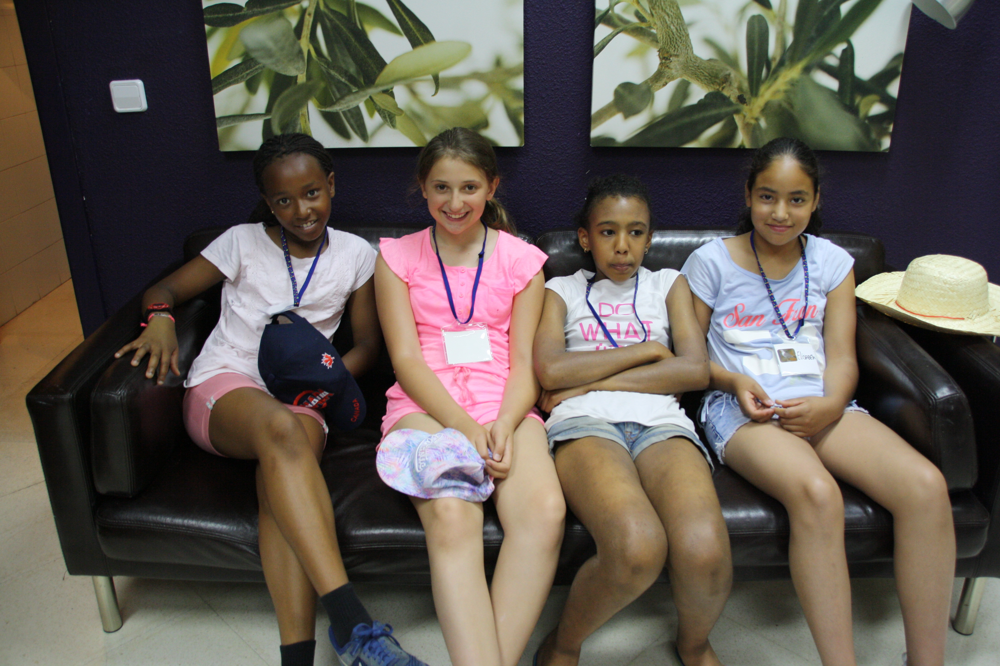
Hemos cambiado muchísimo, pero hay cosas que siguen siendo las mismas.
De aquellos días
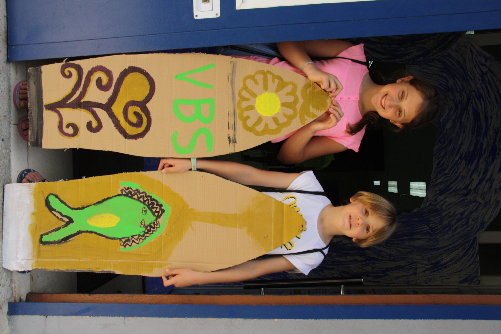
A veces me pregunto qué estaríamos pensando en el momento en que se tomó esta foto.
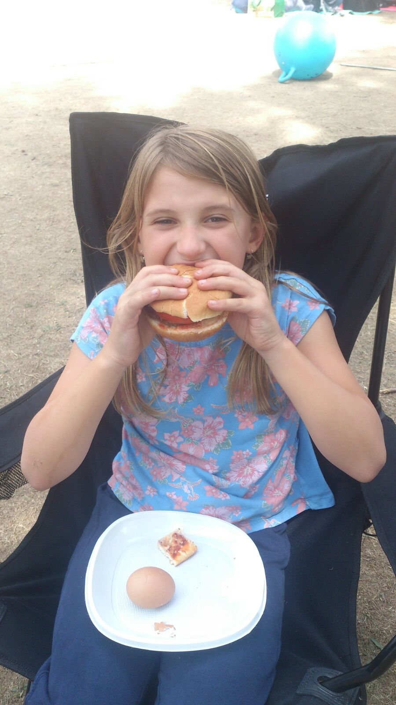
Hay cosas que en su momento parecen normales y que, con el tiempo, echamos de menos.
Sin darnos cuenta
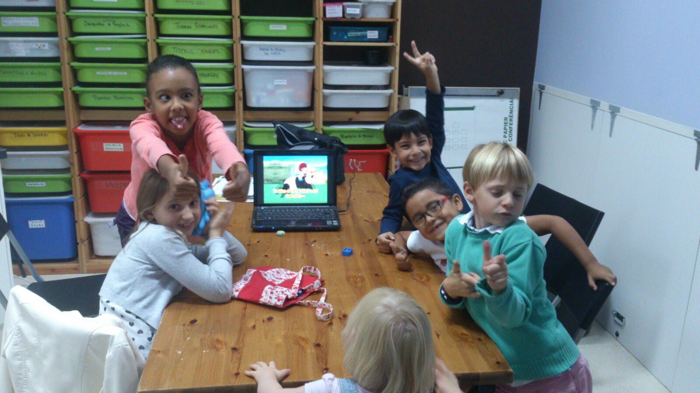
Y así, casi sin darnos cuenta, fuimos acumulando años de historias.
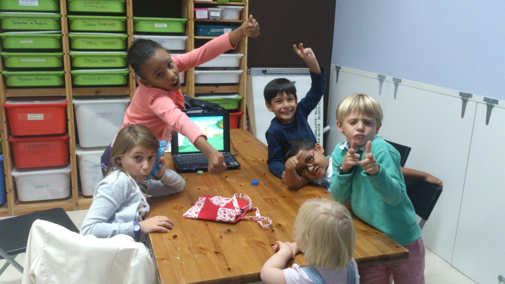
Entre risas, conversaciones y alguna que otra locura, siempre acabábamos creando nuevos recuerdos.
Una pequeña colección
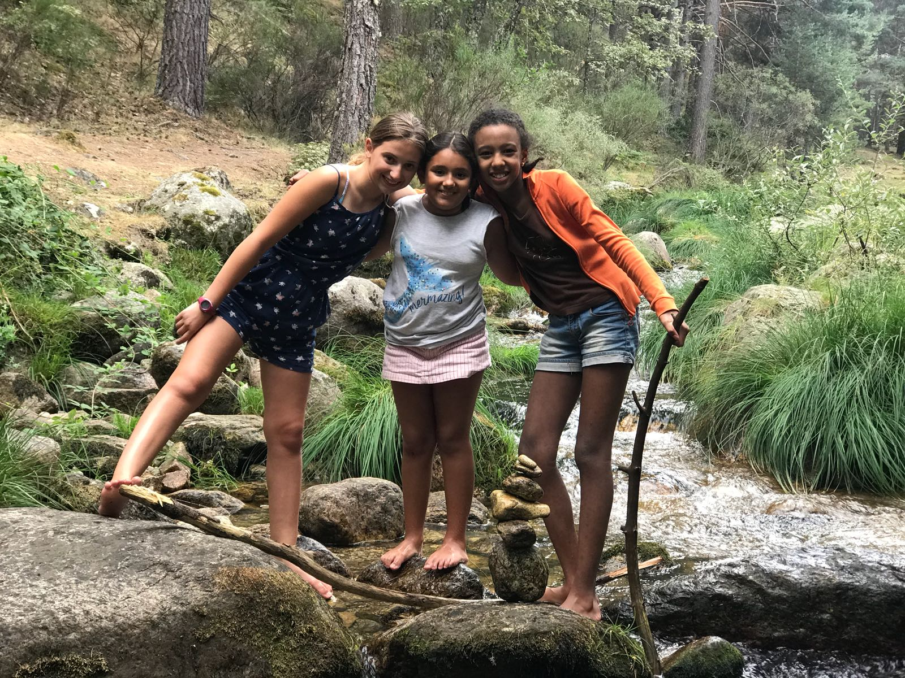
Cada fotografía guarda una historia que quizá solo nosotras entendemos.
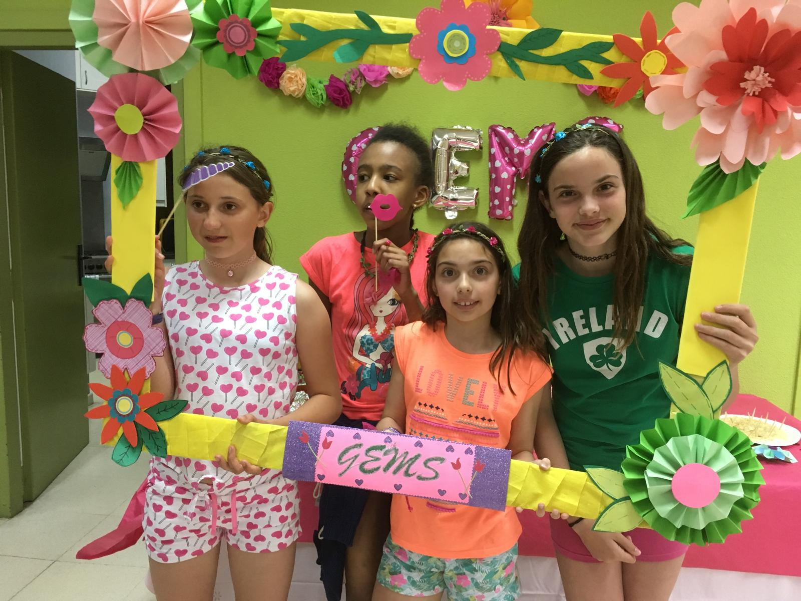
Y aunque no recordemos todos los detalles, siempre quedará algo de aquellos días.
El paso del tiempo
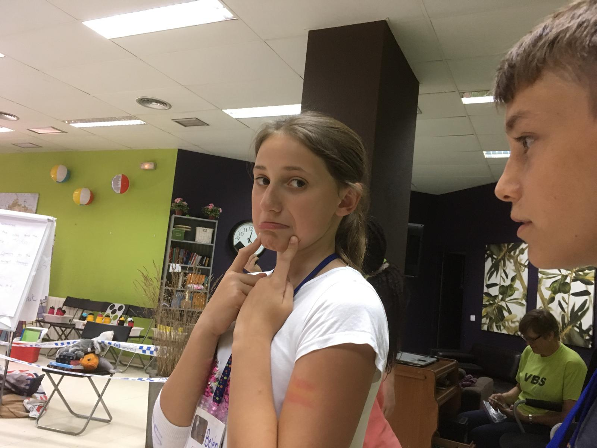
Es increíble mirar atrás y ver cuánto ha cambiado todo desde entonces.
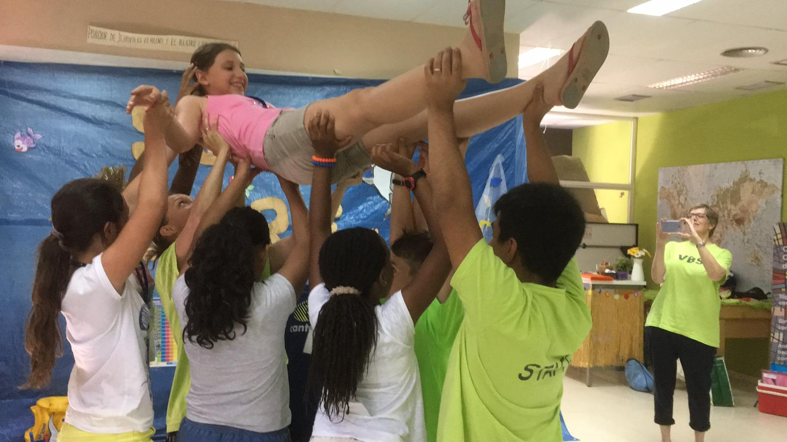
Pero, entre tantos cambios, me alegra que sigamos compartiendo momentos.
Y todavía quedan más
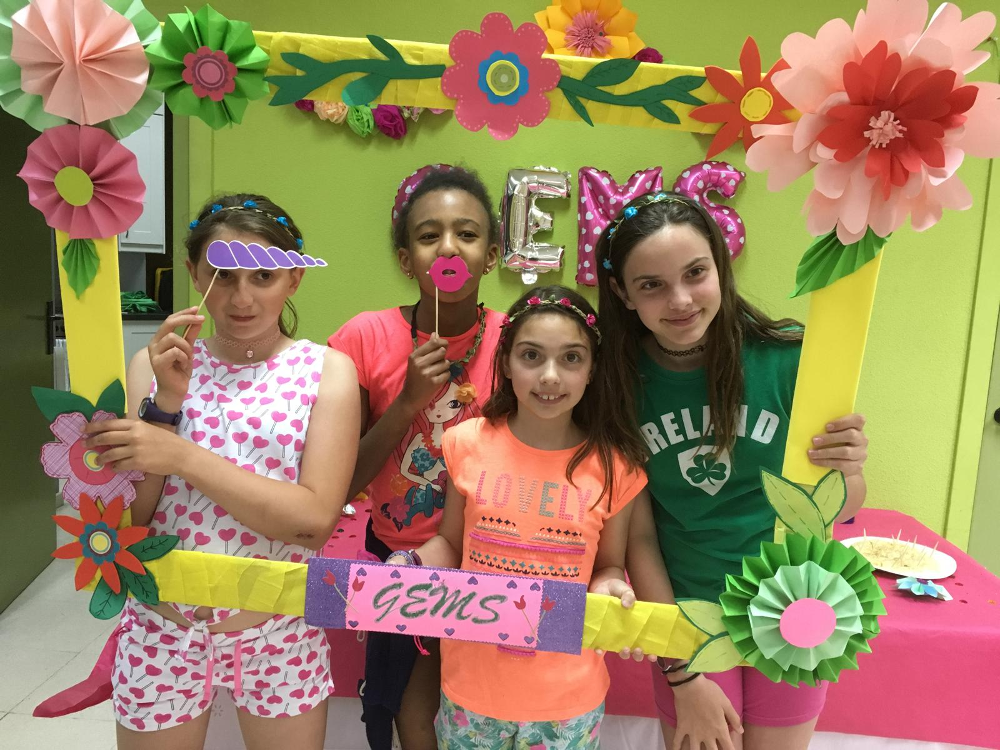
Si algo tengo claro, es que todavía nos quedan muchas historias por vivir.
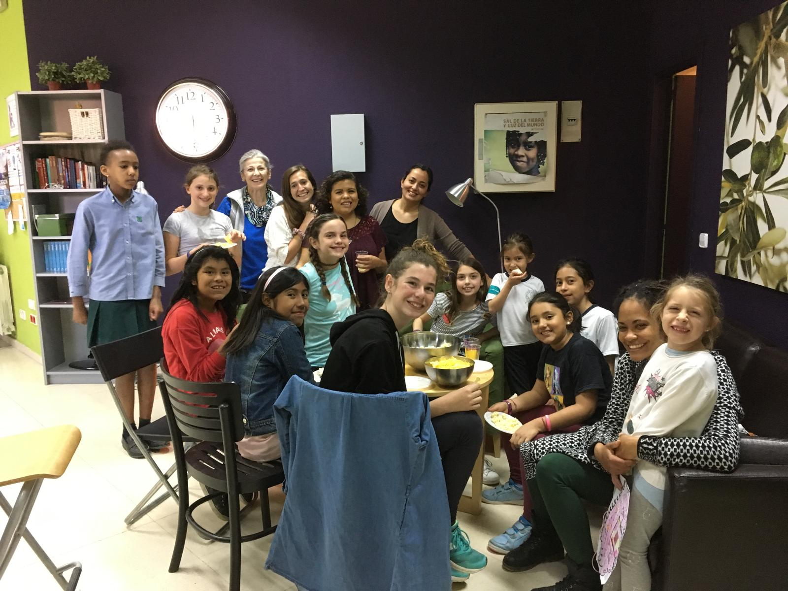
Por ahora, me quedo con todo lo vivido y con la suerte de haberlo compartido contigo.
Una pequeña nota
Me alegro muchísimo de que te pueda conocer y tenerte en mi vida. Gracias por todos los momentos que hemos compartido y por los que aún nos esperan. Te quiero muchisisisimo y espero que este día sea tan especial como tú. ¡Feliz cumpleaños Belén!
Continuará
Por muchos años más, muchas aventuras y recuerdos que algún día volveremos a mirar.